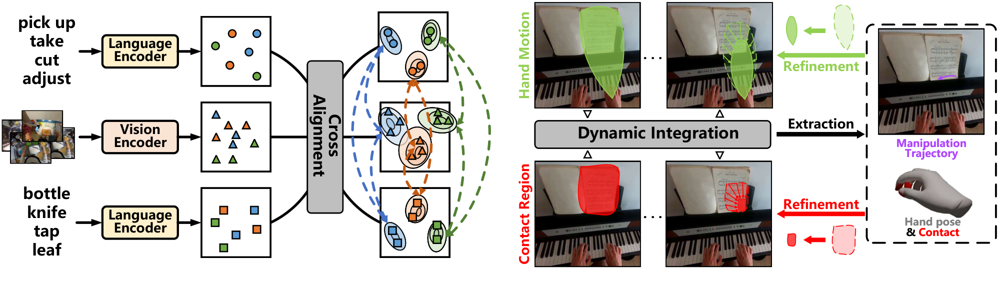
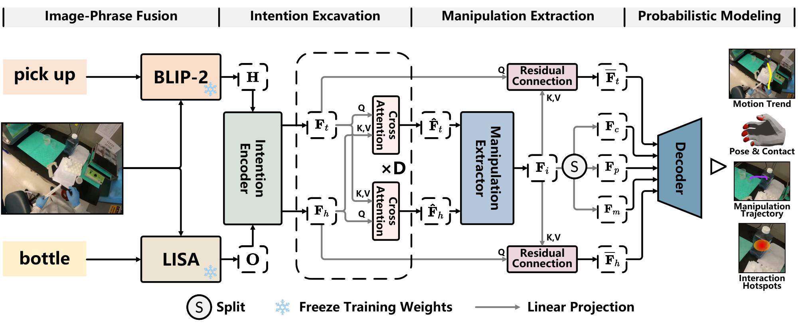
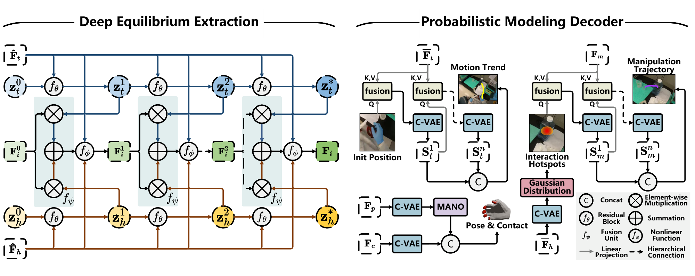
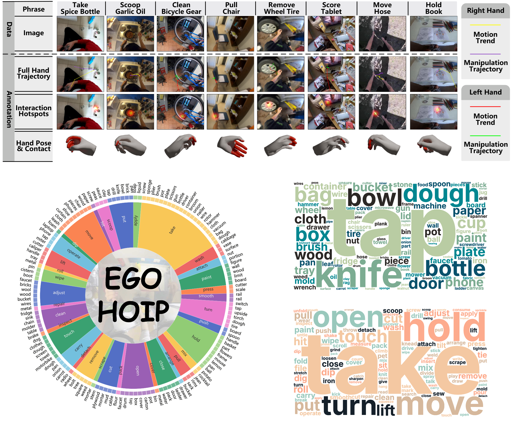
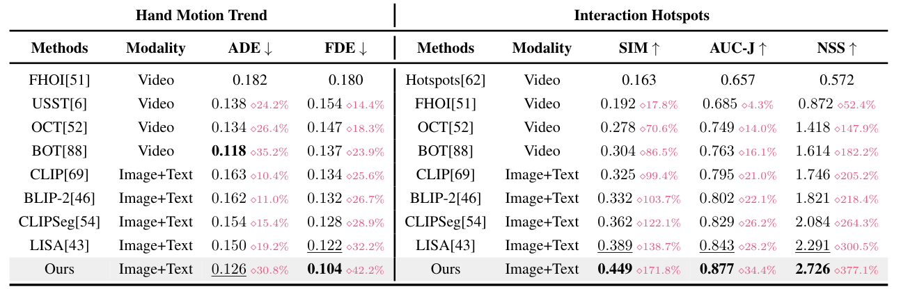
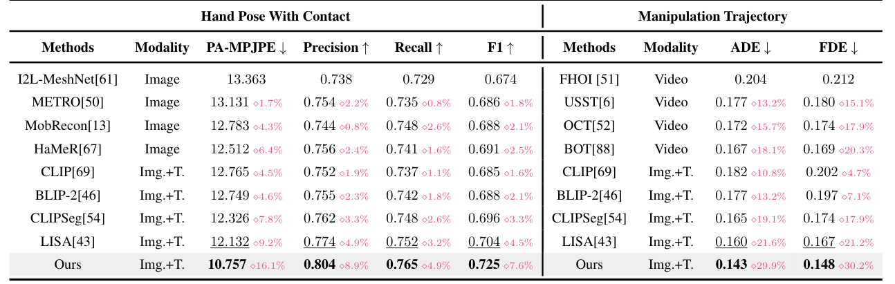
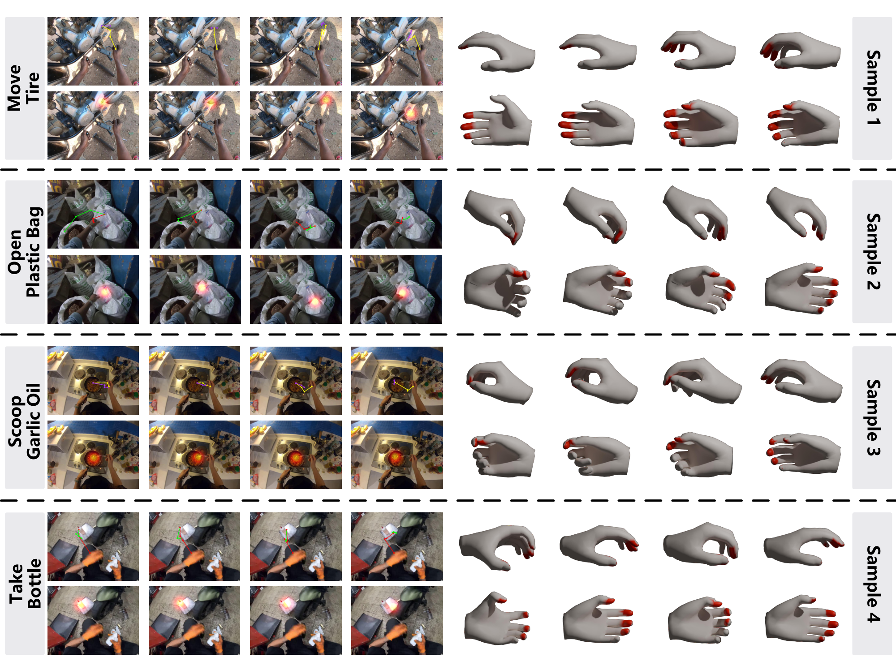
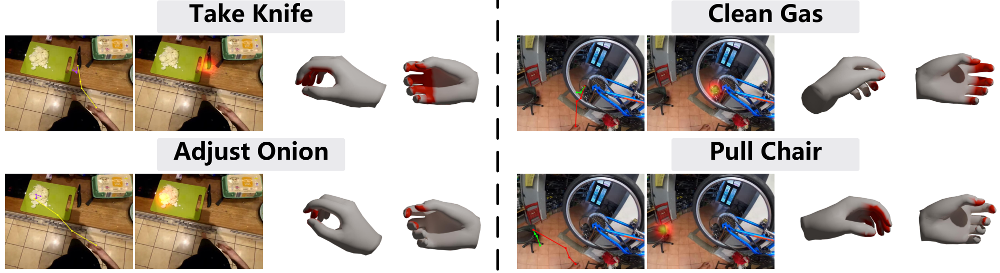
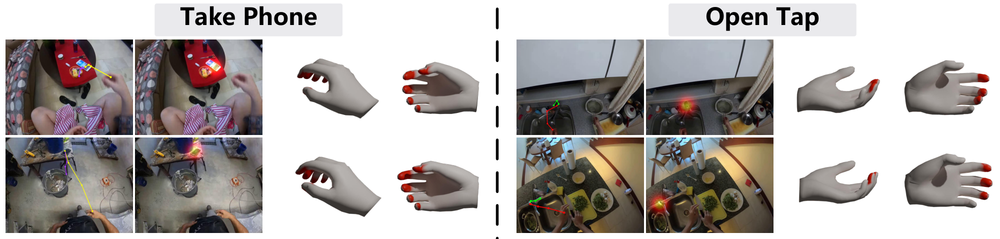
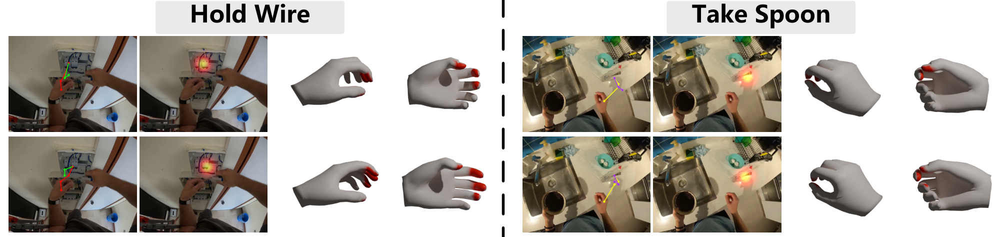

First-person hand-object interaction anticipation aims to predict the interaction process over a forthcoming period based on current scenes and prompts. This capability is crucial for embodied intelligence and human-robot collaboration. The complete interaction process involves both pre-contact interaction intention (i.e., hand motion trends and interaction hotspots) and post-contact interaction manipulation (i.e., manipulation trajectories and hand poses with contact). Existing research typically anticipates only interaction intention while neglecting manipulation, resulting in incomplete predictions and an increased likelihood of intention errors due to the lack of manipulation constraints. To address this, we propose a novel model, PEAR (Phrase-Based Hand-Object Interaction Anticipation), which jointly anticipates interaction intention and manipulation. To handle uncertainties in the interaction process, we employ a twofold approach. Firstly, we perform cross-alignment of verbs, nouns, and images to reduce the diversity of hand movement patterns and object functional attributes, thereby mitigating intention uncertainty. Secondly, we establish bidirectional constraints between intention and manipulation using dynamic integration and residual connections, ensuring consistency among elements and thus overcoming manipulation uncertainty. To rigorously evaluate the performance of the proposed model, we collect a new task-relevant dataset, EGO-HOIP, with comprehensive annotations. Extensive experimental results demonstrate the superiority of our method.
The same scene admits many interactions, and the same intention can be carried out in many ways. PEAR treats the two sources of uncertainty separately: a phrase narrows down what the hand is going to do and where, and the manipulation that follows is tied to that intention in both directions.

Motivation. (a) Cross-aligning nouns, verbs and images reduces the scope of the intention elements and overcomes intention uncertainty. (b) Manipulation elements are derived through the dynamic integration of the intention elements, and the initial intention is refined by the manipulation in turn, which mitigates manipulation uncertainty.

PEAR pipeline. The model takes an image and a phrase as inputs and anticipates the future interaction elements. It consists of four components: an image-phrase fusion module, an interaction intention excavation module, an interaction manipulation extraction module, and a probabilistic modeling prediction module.

Details of the structure. (a) The DEQ extraction model takes the hand motion feature and the interaction hotspots feature as inputs and produces a fused feature in the equilibrium state, which serves as the manipulation feature. (b) In the probabilistic modeling prediction module, hand motion trends and manipulation trajectories use chain-structured C-VAEs, and the hand pose decoder incorporates the parametric MANO model.
EGO-HOIP is built from first-person hand-object interaction videos of EGO4D. It contains over 5,000 scene-prompt pairs with more than 90 verbs and 600 nouns, and over 15k annotations. Hand trajectories before and after contact and 3D hand poses are generated automatically; interaction hotspots and hand contact are annotated manually.

EGO-HOIP. (a) Data and annotations: each sample comprises an interaction prompt phrase and a pre-interaction image. (b) Examples of verb-noun pairings in the phrases. (c), (d) Word clouds of nouns and verbs.

Interaction intention anticipation (hand motion trend and interaction hotspots), compared with video-based and image-and-text-based methods.

Interaction manipulation anticipation (hand pose with contact and manipulation trajectory).

Visualization. Left of each sample: the predicted complete hand trajectory and interaction hotspots. Right: the predicted hand pose with contact from two views. Yellow and red denote the right- and left-hand motion trends, purple and green the right and left manipulation trajectories; contact areas are marked in red on the hand mesh.

Different phrases. The input image is fixed and the phrase is varied.

Different images. The phrase is kept and the image is changed.

Uncertainty. Inference is repeated with identical inputs to show the variation introduced by the probabilistic modeling decoder.
@article{zhang2025pear,
title = {PEAR: Phrase-Based Hand-Object Interaction Anticipation},
author = {Zhang, Zichen and Luo, Hongchen and Zhai, Wei and Cao, Yang and Kang, Yu},
journal = {Science China Information Sciences},
volume = {68},
number = {5},
pages = {150209},
year = {2025},
doi = {10.1007/s11432-024-4405-4}
}